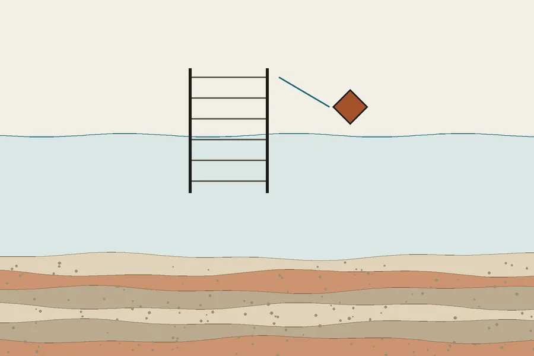

Paper · 27 Aug 2025
Thioester-mediated RNA aminoacylation and peptidyl-RNA synthesis in water
Singh, Thoma, Whitaker, Satterly Webley, Yao, Powner · Nature 644:933-944

In a sentence
Amino acids carried on sulfur compounds attach to the ends of RNA in water, ahead of joining to each other.
In plain words
Cells make proteins by first loading amino acids onto transfer RNAs, a job done by enzymes. This study shows a chemical way to do the loading without enzymes: amino acids bound to thiols, sulfur compounds still used by cells, stick to the right spot on RNA rather than linking up into random chains. Several prebiotic starting materials make these thiol compounds in water.
Technical detail
Aminoacyl-thiols react selectively with RNA 2',3'-diols over amines, so aminoacylation beats non-coded peptide bonding; scope covers 14 proteinogenic amino acids. Prebiotic nitriles, N-carboxyanhydrides and amino-acid anhydrides react with thiols (including CoA and coenzyme M) to give aminoacyl-thiols. Switching to thioacid activation favours peptides; one-pot peptidyl-RNA at neutral pH.
What we take from it
Planned test
A concrete step toward linking amino acids to RNA, which coding needs. It enters the pathway map as the activation step, with its conditions recorded.
Source checked against its DOI. Read the original.